GhumBotika
For a better Sleep
Developed by:
Istiak Morsalin
Roll:1007007
S.M. Ahsanul Haque
Roll:1007008
Supervised By:
Saifuddin Mahmud
Lecturer
Computer Science and Engineering Department,KUET
Lecturer
Computer Science and Engineering Department,KUET
Contents
objectivesPlatformData Collection & AnalysisImplementationLimitationsFuture Plan
Objectives
Ensure Better sleep for the common people and give a helping hand to the people who are in a trouble with various sleep disorders.
PlatForm
Android
Why Android?
Android is open source and the worlds most popular mobile platforms. Every day more than 1 million new Android devices are activated worldwide .
Data Collection & Analysis
For the purpose of finding a solution we collected data Regarding this problem. We found Solution of our problem by analyzing them.Here is some analysis:
Age vs Sleep Time data Analysis
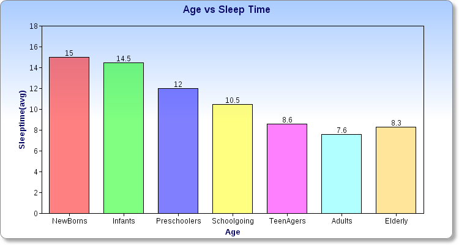Fig(1): Age vs Sleep Time
Sleeping Disorder
.png)
Fig(2): Sleeping Disorder with respect to ocupation
Sleeping Techniques
.png)
Fig(3): Sleeping Techniques
Project OverView
There are mainly four parts of GhumBotika that can be accessed by a user:
Part 1: SleepAbout- Part 2:Tips
- Part 3: Relaxation
- Part 4: SleepAlarm
Part 1: SleepAbout
The first is the Information part. It is mainly a storage of information about sleep
Part 2:Tips
This second part contains a bunch of valuable tips for a better sleep.
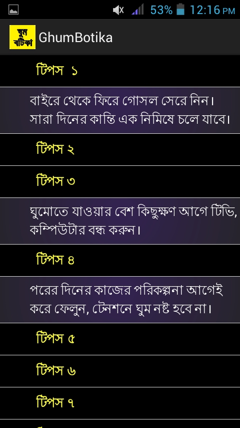Part 3: Relaxation
has Five Buttons and one CheckBox. Each of them contains individual Relaxation options for the user
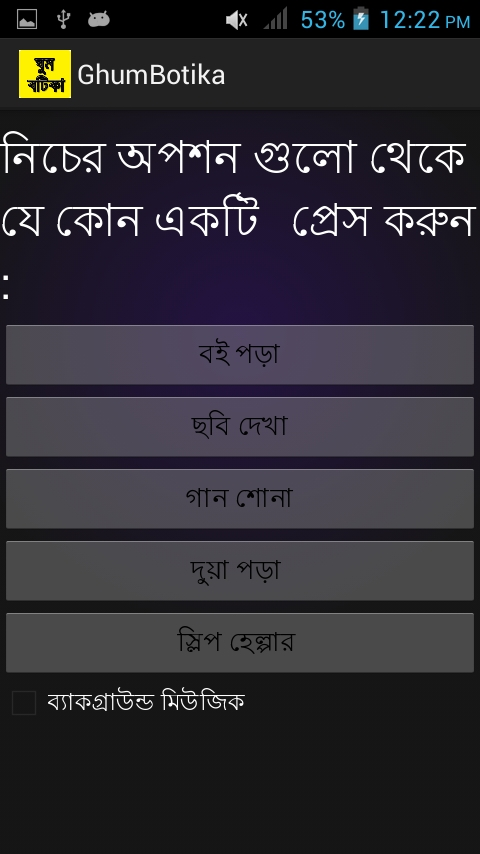ReadBook
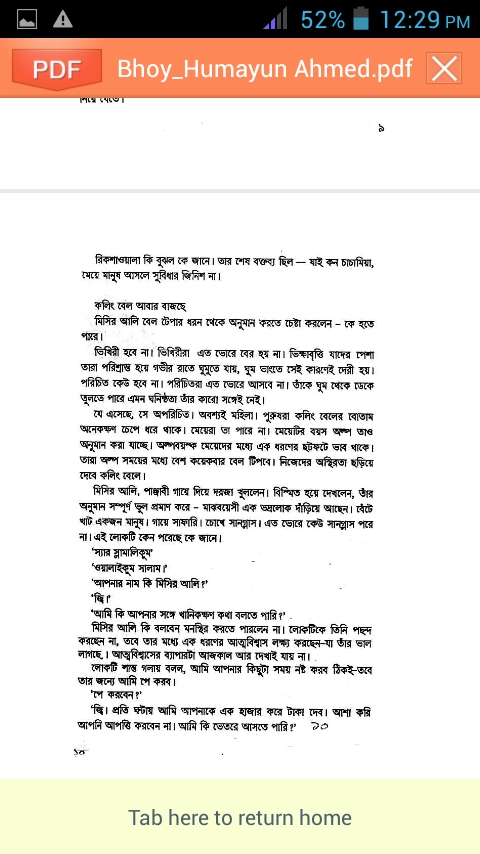Fig: Readbook
ListenMusic
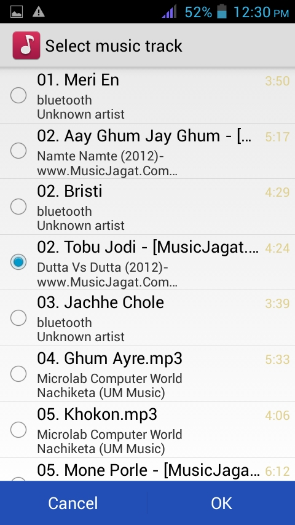Fig :MusicListen
ImageGallery
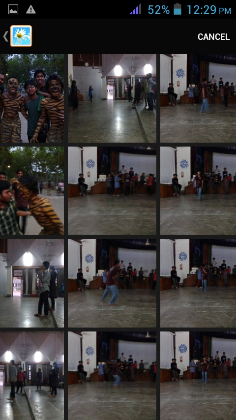Fig :ImageGallery
Tasbih
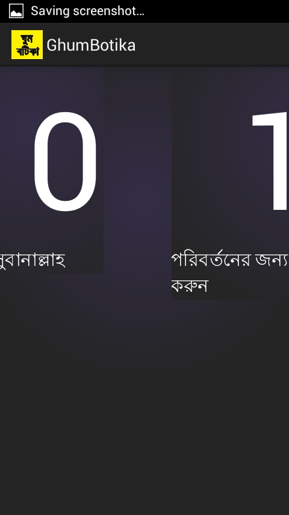Fig :Tasbih
SoundMixer
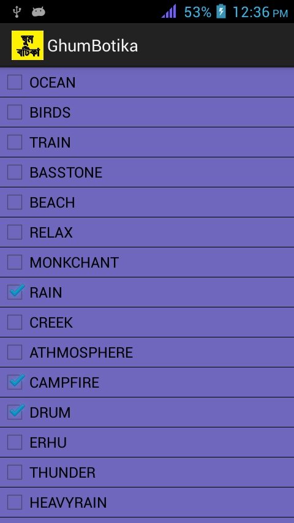Fig :SoundMixer
Part 4: SleepAlarm
This section helps user to maintain a strict sleep cycle.
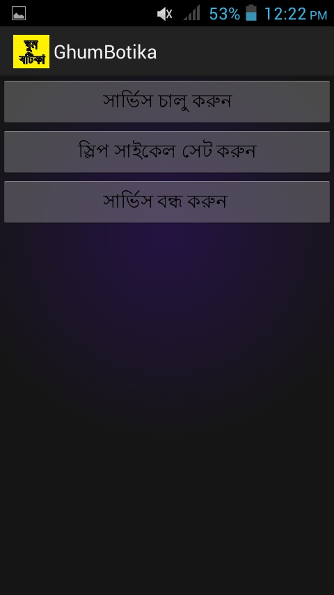Set Sleep Cycle
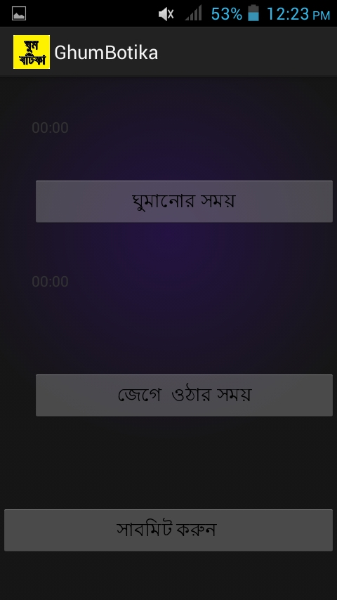Fig: Set Sleep Cycle
Set Time
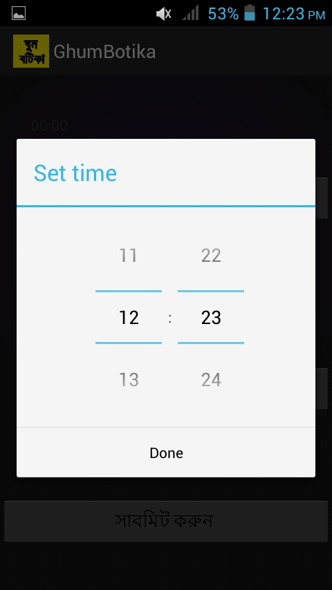Fig :Set Time
Get Notification for sleeping
Fig :Notification
Implementation
User Interface DesignClass Diagram DesignUser Experience
User Interface Design
In our app we followed some of the design patterns of UI for android. Our app uses :
GestureNotification DrawerAction BarNavigationCompound Views and ChecklistSwipe ViewsSelectionWidgetsAnimation
Class Diagram Design:
We used "Abstract Factory Design Pattern" which Is creational software design pattern. This pattern provides interfaces for creating families of related or dependent objects without specifying their concrete classes
Class Diagram Design(2):
Under this Design Pattern we have designed a class diagram that contains all of our classes. Fig shows that:

User Experience :
The Class Diagram shows 23 classes including 15 activity, 4 broadcast receiver and two service class. These classes are used to ensure a concrete user experience.
Limitation:
The tips provided by the app is static. We are not able to provide the users any dynamic tips.The apk size is comparatively larger and that is why is it runs a little bit slow in low memory devicesThe Solutions are not obvious
Future Plan
By analyzing sleep cycle, achieving a sleep graph to represent sleeping pattern of a user.Analyzing the sleep cycle, awake the user in any IREM stage of sleep near awake time.Sending Dynamic tips to its users.Developing preloaded voice for the specific callers in database to make them aware that the user is sleeping.Developing intelligence that can help user scheduling his/her sleep cycle